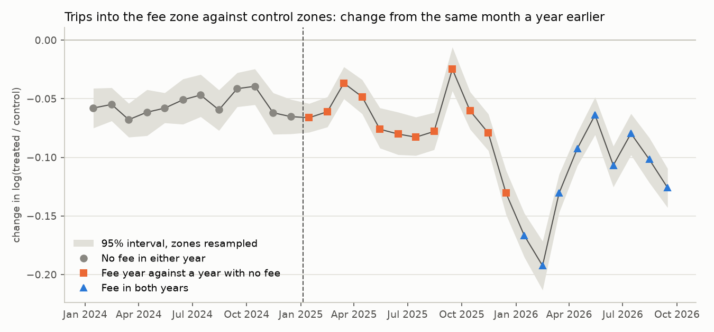
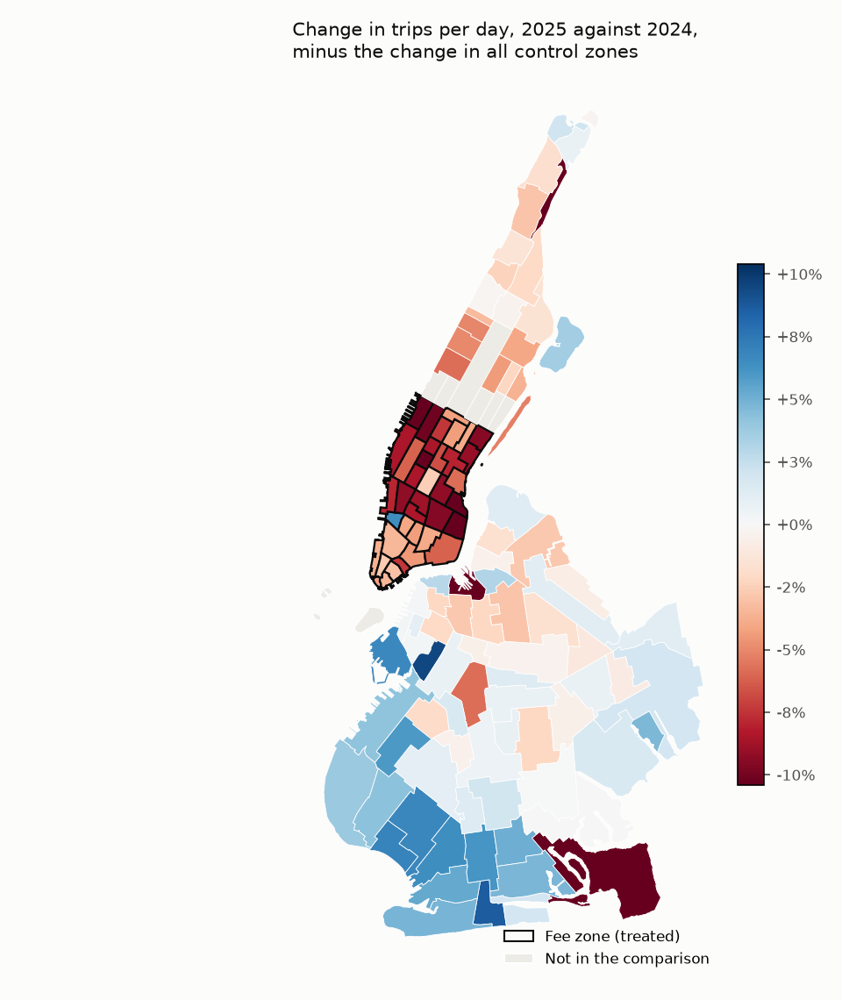

Did congestion pricing change Uber and Lyft trips into the zone?
New York started its congestion fee on January 5, 2025. This page compares trips into the fee zone with trips into other Manhattan and Brooklyn zones, month by month, through 2026-09-30.
-1.4%
95% interval -2.7% to +0.2%, after taking out the change seen in a year with no fee.
We find no change larger than 3% in either direction: the estimate is -1.4% (95% interval -2.7% to +0.2%).


The numbers behind the headline
| Comparison | Change | 95% interval (the wider of the two) |
|---|---|---|
| Year over year, 2025 against 2024 | -6.7% | -7.8% to -5.6% |
| The same check a year earlier, 2024 against 2023 | -5.4% | -6.4% to -4.5% |
The headline is the first row minus the second, on the log scale. It assumes the gap between the two groups would have moved by the same amount from 2024 to 2025 as it did from 2023 to 2024. Only one earlier pair of years is in the data.
How this fits the first study
The study plan was fixed before any result. Its own window, fall 2024 against winter 2025, gave +0.1% after the same correction (95% interval -4.6% to +4.4%). That result stays the primary one. The longer window on this page is a dated amendment, written before any month after March 2025 was loaded.
Data: NYC TLC High Volume For-Hire Vehicle trip records. Built by
nrc site from the reports in the repo. Not published.